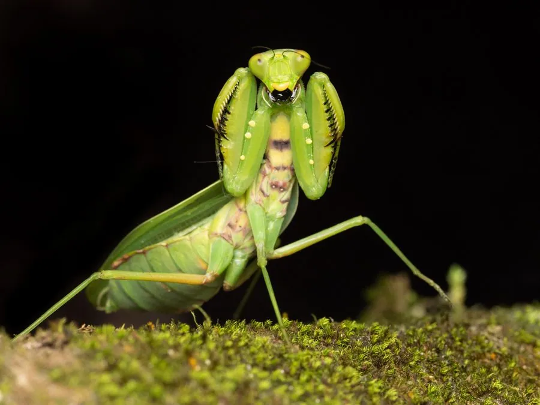

昆虫 · 动物界
广斧螳 Hierodula patellifera

中国常见的螳螂之一，前胸背板两侧有明显的黄色瘤突，雌虫腹部宽大，常栖息在灌丛和农田，捕食多种害虫。
- 分类
- 门节肢动物门纲昆虫纲目螳螂目科螳科属斧螳属
- 栖息环境
- 灌丛、草地、果园和农田，常在枝叶间伏击猎物
- 地理分布
- 中国大部分地区以及日本、朝鲜半岛
- 保护级别
- IUCN 暂无评估；中国未列入国家重点保护名录
物种志
广斧螳雌虫体长 6–8 cm，雄虫 4–6 cm，体色多为绿色，也有褐色型。前胸背板较长，两侧各有一列黄色瘤突，这是它区别于其他斧螳的重要特征；前足为捕捉足，基节内侧有刺，复眼大而突出，触角细长，雄虫触角比雌虫更发达。
它分布在中国大部分地区以及日本、朝鲜半岛，栖息于灌丛、草地、果园和农田，捕食蝗虫、蛾类、蝇类和叶蝉等，是农业上的天敌昆虫。广斧螳一年发生一代，以卵鞘在枝条或墙壁上越冬，若虫孵化后分散活动，经多次蜕皮长大，雌虫交配后产下卵鞘，有时会捕食雄虫。它性情凶猛但对人无害，是观察昆虫捕食行为的好对象；卵鞘俗称螵蛸，常被挂在树枝上。目前尚无专门的保护评估。
形态与习性
- 食性捕食蝗虫、蛾类、蝇类和叶蝉等
- 体长雌虫 6–8 cm，雄虫 4–6 cm
- 识别前胸背板两侧各有一列黄色瘤突
- 生活史一年一代，以卵鞘在枝条或墙壁上越冬
- 习性伏击捕食，雌虫交配后有时捕食雄虫
趣味知识
- 广斧螳前胸背板两侧的黄色瘤突，是辨认它的重要标志。
- 它把卵产在泡沫状的卵鞘里，卵鞘干燥后像一块小海绵。
- 雌螳螂体型比雄螳螂大，交配后偶尔会把雄螳螂吃掉。
生态关系
- 捕食 → 中华蚱蜢 螳螂伏击蝗虫